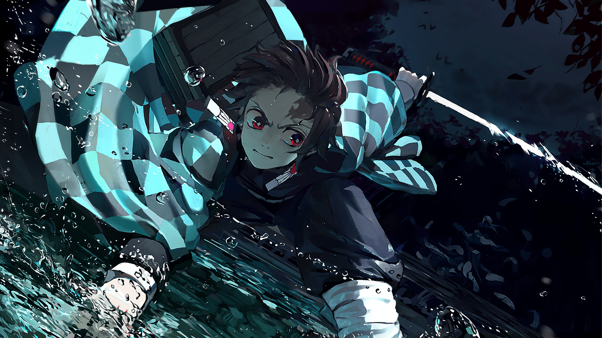
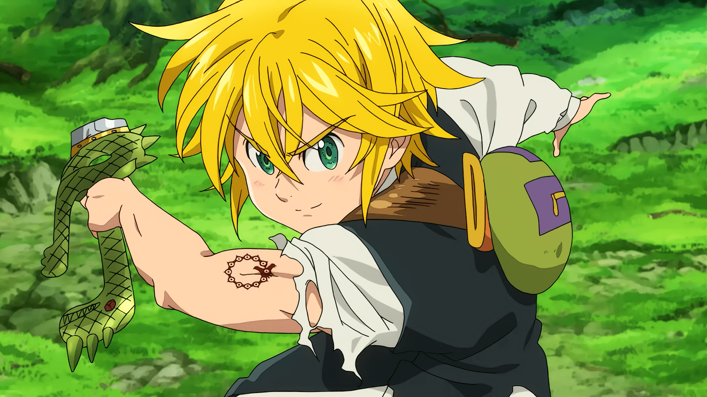
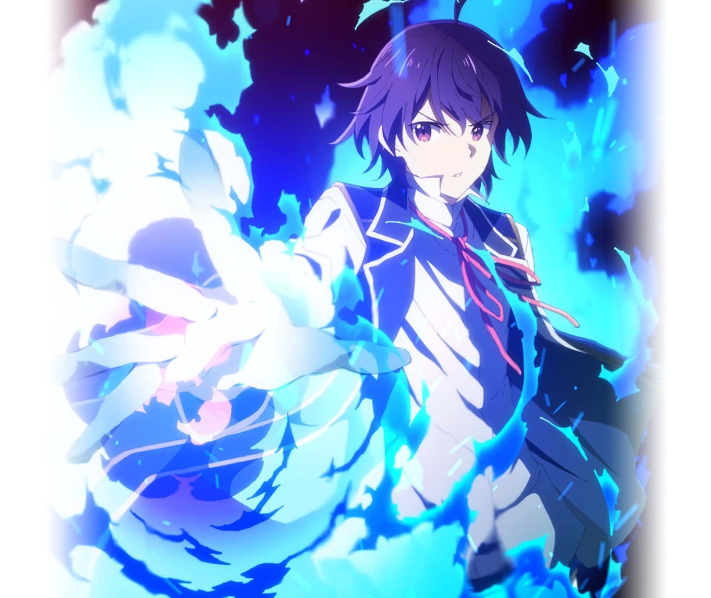

Kimetsu no Yaiba
Ambientada en la era Taisho, la historia se centra en un joven llamado Tanjiro Kamado; un joven inteligente y de buen corazón que vive con su familia en las montañas, el cual se ha convertido en la única fuente de ingresos de su familia tras el fallecimiento de su padre, haciendo viajes al pueblo cercano para vender carbón. Sin embargo, toda su vida cotidiana cambia radicalmente cuando en uno de estos viajes, regresa a casa y descubre que toda su familia había sido asesinada por un poderoso demonio llamado Muzan Kibutsuj.

Nanatsu no Taizai
Durante una época medieval en el reino de Liones, la tercera princesa del reino, Elizabeth Liones, busca liberar a las personas del abuso de poder y opresión que los caballeros sagrados ejercen. La princesa huye de su hogar para ir en la búsqueda de los legendarios Siete Pecados Capitales, donde conoce al dueño, Meliodas, un joven que aparenta ser un adolescente y que tiene un poder oculto; y a Hawk, un cerdo con la particular habilidad de hablar.

Kenja no Mango
Un joven asalariado de turno completo muere en un accidente automovilstico, reencarnado en otro mundo lleno de magia y demonios. Cuando era bebé, fue recogido por el héroe patriota “El Sabio” Merlin Wolford y se le dio el nombre de Shin Wolford. Fue criado como su nieto y aprendió las enseñanzas de Merlín, lo que le valió algunos poderes increíbles.
Sin embargo, cuando Shin cumplió los 15 años, Merlín se dio cuenta de algo: “¡Olvidé enseñarle cosas comunes!”.